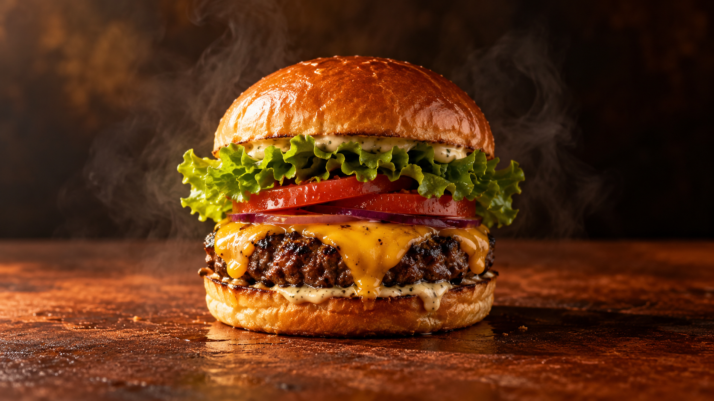

Brasa Original
Uma composição visual para o favorito da casa.
Uma ideia de presença digital para hamburguerias que põe o produto no centro da experiência.
Explorar cardápio
Uma cena em movimento dá ritmo à história. Fotografia e filme gerados para esta demonstração; o projeto real usaria a identidade e os produtos da marca.
Camadas, textura e movimento traduzem o cuidado de uma cozinha artesanal. No projeto real, a história, os ingredientes e as fotos seriam construídos com a marca.
Demo conceitual fictícia criada para o portfólio ServAgency.
Conhecer a ServAgency